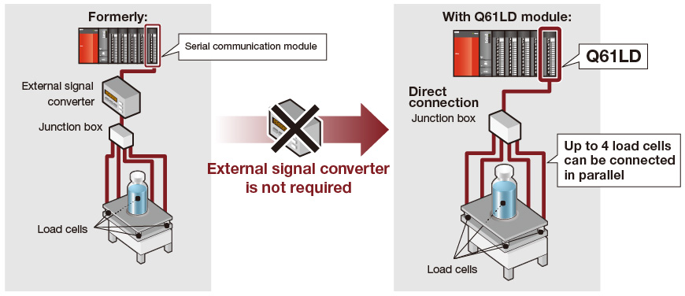
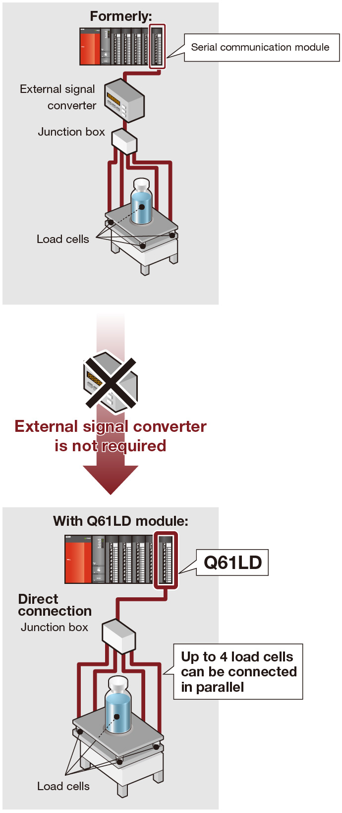
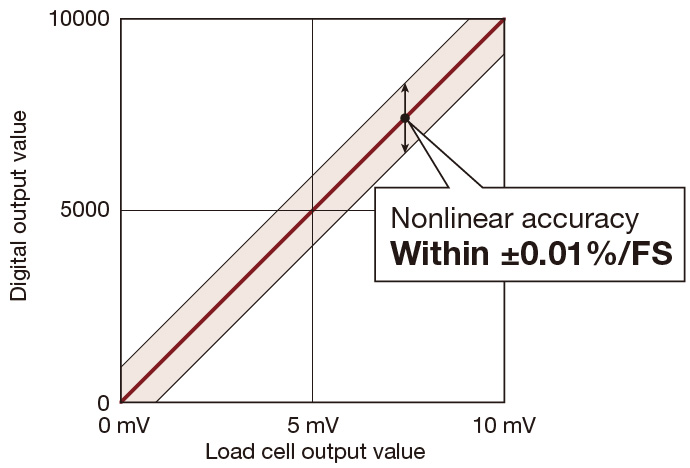
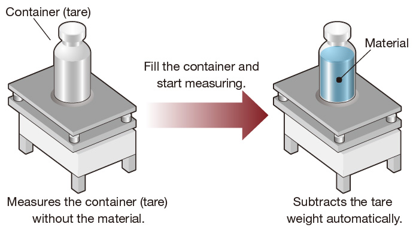
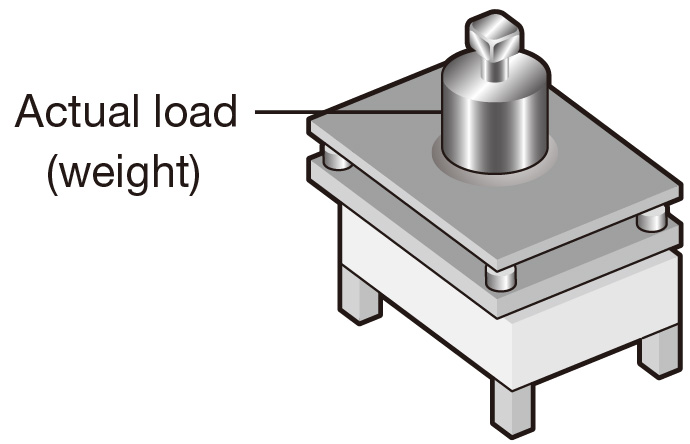
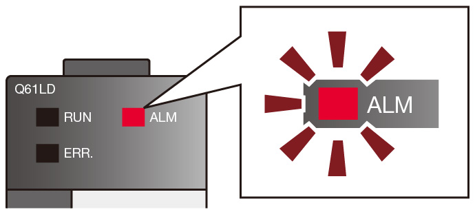

Pengendali Seri MELSEC-Q
Fitur Produk -Analog-

Sel beban
Berinteraksi dengan semua jenis sel beban dengan modul I/P sel beban
Modul input sel beban
Sel beban kini dapat langsung dihubungkan ke sistem pengontrol terprogram tanpa memerlukan konverter sinyal eksternal.
Modul ini mencapai pengukuran yang sangat akurat dengan kecepatan konversi data yang stabil yang menjamin keakuratan sel beban.
Konverter sinyal terpisah tidak diperlukan.
Kurangi biaya rekayasa dengan menghubungkan sel beban secara langsung ke pengontrol yang dapat diprogram
- Semua jenis sel beban*1 seperti magnetostriction, kapasitif, giroskop, atau pengukur regangan.
- Sistem 6-kawat (kombinasi metode penginderaan jarak jauh dan rasiometrik) atau sel beban sistem 4-kawat.
- *1.Dalam 5 V DC dari tegangan yang diberikan, dan arus keluaran 60 mA. (4 unit dapat dihubungkan secara paralel dengan sel beban tipe 350 Ω)

- Aplikasi yang memerlukan akurasi tinggi dapat dicapai dengan menghubungkan sel beban langsung ke pengontrol yang dapat diprogram.
- Akurasi nonlinier: Dalam ±0,01%/FS
- Pergeseran nol: Dalam ±0,25 µV/°C RTI
- Pergeseran penguatan: Dalam ±15 ppm/°C
- (Keluaran terukur sel beban adalah 2 mV/V, suhu sekitar adalah 25°C, dan fungsi pengurangan berat tara tidak digunakan.)

Fungsi zero offset
Fungsi ini secara otomatis mengurangi berat tara relatif terhadap rentang penggunaan sel beban saat mengkalibrasi instrumen pengukuran.
Penggunaan fungsi ini dapat meningkatkan akurasi instrumen pengukuran.

Fungsi kalibrasi beban statis
Nilai berat kotor dapat dikalibrasi secara akurat dengan menerapkan beban aktual (berat) ke sel beban.

Fungsi deteksi kesalahan sinyal input
Kesalahan sinyal input sel beban dapat dideteksi.
- Kesalahan sinyal input
- Kesalahan kapasitas berat
- Titik nol di luar rentang
- Kesalahan konversi melebihi batas

Rangkaian produk
| Number of channels | Channel isolated | Load cell |
|---|---|---|
| 1 | ● | Q61LD |